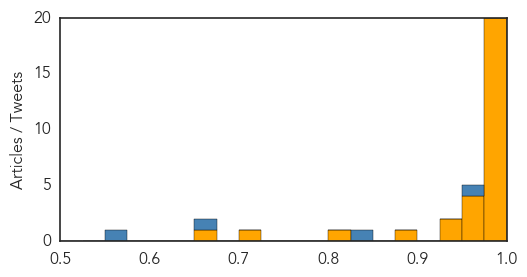

Ebola
30-Day Web Trend
1 alerts, 0 warnings

30-Day Twitter Trend
0 alerts, 0 warnings

Article Locations
Article Confidences
Top Articles:
- 1.000
- Successful Ebola vaccine provides 100% protection in trial
- 1.000
- Ebola outbreak of 2014-15
- 1.000
- Britannica.com
- 0.999
- Experimental Ebola vaccine could stop virus in West Africa
- 0.999
- Breakthrough in quest for Ebola vaccine
- 0.998
- Vaccine against Ebola virus might change the way Ebola is managed
- 0.998
- Experimental Ebola Vaccine Could Halt Virus In West Africa
- 0.998
- UN emergency response mission winds down as WHO announces possible 'game changer' vaccine
- 0.997
- Thousands of unregistered children born during Ebola crisis
- 0.997
- Predicting epidemics: No apologies for blown Ebola estimate
- 0.997
- Experimental vaccine could stop Ebola in West Africa
- 0.996
- Vaccine success holds hope for end to deadly scourge of Ebola
- 0.991
- Ebola in Sierra Leone – Remembering Dr. Khan and the other health workers
- 0.991
- Ebola vaccine – reason to be hopeful?
- 0.990
- Ebola Vaccine Hailed As ‘Game Changer’ In Fight Against The Virus
- 0.989
- Ebola vaccine is a game-changer
- 0.987
- CDC’s top modeler courts controversy with disease estimate
- 0.986
- CDC's top modeler courts controversy with disease estimate
- 0.985
- UN Ebola mission winds down, WHO takes reins in West Africa
- 0.979
- Kenya mulls granting refuge to chimps from Ebola-hit Liberia
- 0.971
- In Sierra Leone, addressing Ebola’s impact on birth registration - Sierra Leone
- 0.963
- NATCOM visits Gambia and Senegal to help stop Ebola
- 0.958
- New Ebola Vaccine 100 Percent Effective In Trial, WHO Says
- 0.953
- Secretary-General Announces Closure of Ebola Emergency Response Mission as Core Objective Achieved, Oversight to Be Led By World Health Organization
- 0.947
- CDC modeler makes estimates, stirs controversy
- 0.944
- World on the verge of an effective Ebola vaccine
- 0.883
- Restore Hope is Hosting Post Ebola Strategies Summit in Texas
- 0.813
- Potential Ebola vaccine developed, says WHO
- 0.707
- Guinea Ebola vaccine trial ‘extremely promising’: WHO
- 0.661
- IOM trains Ghana border officials in Ebola prevention
Top Tweets:
- 0.992
- Experimental Ebola vaccine could stop virus in West Africa - WWSB ABC 7 http://t.co/ulALTZsjUa ebola EVD
- 0.920
- Ebola Vaccine Shows 100% Effectiveness In Latest Trial - io9 http://t.co/ARAfw5op6X ebola EVD
- 0.848
- Deeply moved to hear stories of three of the first Ebola patients of the epidemic. 2 MDs and med student, all infected before Ebola dxed.
- 0.833
- Predicting epidemics: No apologies for blown Ebola estimate - Press Herald http://t.co/IbAHcqu0hc ebola EVD
- 0.813
- Sierra Leone faces Ebola setback; 500 under quarantine:... http://t.co/xSlRRTc4yP
- 0.765
- CDC's overblown estimate of Ebola outbreak draws criticism - The Seattle Times http://t.co/TkWaWrxnfR
Chikungunya
30-Day Web Trend
3 alerts, 0 warnings

30-Day Twitter Trend
1 alerts, 0 warnings
Article Locations

Article Confidences

Top Articles:
-
No articles found for Aug 02, 2015
Top Tweets:
-
No tweets found for Aug 02, 2015